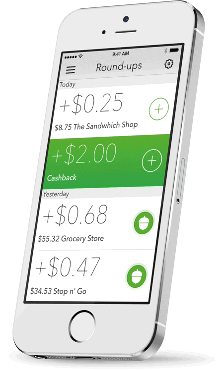

Acorns understands Millennials and could grow up to capture trillions
At its core, Acorns is an investment app that lets users invest loose change in diversified portfolios.
A seemingly trivial idea, Acorns has a promising future. The app could one day become a serious company if it continues to activate a new generation of investors and matures into a complete, end-to-end investing platform (prominent examples of this end-to-end model include Warby Parker, Uber, and Netflix).
As the American proverb says: “Mighty oaks from little acorns grow.”
The Acorns app allows investors to make regular, aggregated sub-dollar investments in fractional shares, an approach called “micro-investing.” After an initial investment of five dollars, credit and debit card purchases are “rounded-up” to the nearest dollar, and then allocated into low-cost index funds based on modern portfolio theory and the investor’s risk tolerance.
For example, I purchased a book for $22.42 on Amazon this week, and $0.56 was added to my round-up balance. Once the total of my “round-ups” reached $5, the money was withdrawn from my bank checking account and added to my Acorns investment portfolio.
In the past two months, my account balance has grown to $120 dollar with a +0.76 percentage return on the portfolio. Obviously, past performance does not guarantee future results but so far, so good for a low-cost investment portfolio that I plan to stick with over the long haul.
The service is very young, so no word on whether the returns justify the fees. Currently, Acorns charges a $1 monthly fee for all users and charges a 1% management fee for all accounts. If your account balance exceeds $5,000, this management fee drops to 0.25%.
What’s not to love? Not only is the app making it cheaper to invest, reducing the human error in investing, but also democratizing personal asset management for Millennials.
Shaped by the recession of 2008, slow and steady is the way Millennials are poised to enter the financial services market. And unable or unwilling to pay a lump sum to meet account minimums for most investment firms, or a financial adviser’s hefty commission fees, many companies have overlooked a market ready to cultivated for future harvest.
By 2025, Millennials will make up as much as 75% of the workforce and it is conservatively estimated that millennials already have a conservative $2 trillion in investable assets, growing to $7 trillion by 2018.
Acorns understands the potential of this emerging market. According to the Business Insider, Acorns says that 35% of its 60,000 users are in that 18 to 32 range, and that it's on track to have 1 million by the end of its first year.
Millennials may be skeptical of Wall Street, but we are fond of Silicon Valley.

Like other parts of our lives (Instagram for photos, Tinder for dating, Snapchat for messaging), we want our financial lives to be exciting, empowering, and at the least, engaging. The current success of the Acorns app has been its ability to tap into all three – by meeting users’ needs, requiring little effort, and by being enjoyable.
After answering a series of simple questions, the app funnels a user into one category of risk tolerance eliminating all guess-work. The result is a page communicating how having a higher risk tolerance level means higher volatility in investment outcomes. The design minimalism is bold and conveys confidence. The value proposition is always front and center. Moreover, if the individual investor is unhappy with the results of the initial questionnaire, the risk tolerance category can be easily changed. Already, excitement is generated because the app is personalized to my needs.
After setting up a “round-up” account (which can be set to automatic deposits) the investor can sit back and relax. I now feel empowered. The initially foreboding process of starting an investment portfolio just took five minutes to set and forget.
Over the next couple of days, I realize how my daily expenses provide multiple opportunities to “round-up” loose change and the more I engage with the app, the more interested I am in the wealth of information presented throughout the carefully crafted user flow.
Yet despite the great experience, the Acorns app has room to grow:
1. Notify investors when the portfolio receives an investment and yields a positive percentage.
The app is initially exciting but fails to sustain this emotion over a long period of time. This is a problem, especially because the only other method of sustaining excitement is for the user to continually see a positive percentage return on the portfolio – a number that fluctuates with uncontrollable volatility.
2. Permit investors to manipulate the spread of their portfolio.
Empowerment is hard to preserve if your app relies on a “robo-advisor.” I may feel empowered 15 years from now when my automatic “round-ups” and my weekly drip deposits of $5 accrue a sizable investment portfolio but until then, waiting for a .001 percentage increase on a low-yield index fund could tempt me to invest with a competitor that allows more user input.
3. Gamify investments with "round-up" goals, allowing investors to "top-up" if they fall short.
The Acorns team has figured out how to activate / acquire users but engaging them past the first two stages of Dave McClure’s customer development framework (Acquisition, Activation, Retention, Referral & Revenue) will be a challenge. Acorns' core feedback loop is simple: invest, make money, and repeat. However, if engagement is solely dependent on this core loop, the retention rate of app users will continue to drop as users sustain monetary losses. The Acorns team will need to manufacture engagement in other ways to giver their core loop time to return positive results. Consider it a spoonful of sugar to help the medicine go down.
All things considered, Acorns has shipped a product that people love. And most importantly, Acorns underlying assumption – investing in Millennials – is a smart bet.
“We want small investors who can grow with us over time,” said Acorns co-founder, Jeff Cruttenden in a recent Time magazine interview.
Growth is the operative word and only time will tell if Acorns is able to find a scalable method for acquiring and monetizing customers. Acorn’s trajectory (exponential growth or ultimate crash & burn) will depend upon it’s ability to sustain the initial sparks of success – to build a company, not just an app.
The long-term vision should be to become an end-to-end personal asset management company where every detail of your financial life (from budgeting to bill paying to investing) is automated, every penny is saved, and discretionary funds are allotted for that trip you’ve always wanted to take.
If Acorns grows to fulfill this vision, it will disrupt the financial services industry and positively change the narrative of a generation.
I think that’s worth a $5 investment.